浏览器的缓存（协商缓存）
以下内容是 http 缓存，也是浏览器和服务器之间的协商缓存
以下缓存与 http 规定的内容毫无关系，他是浏览器和服务器自己定义的规则，主要在请求头中发送各种参数来表明含义
在调试的时候是可以禁用缓存的
所谓**客户端缓存(浏览器缓存)**，顾名思义，是将某一次的响应结果保存在客户端（比如浏览器）中，而后续的请求仅需要从缓存中读取即可，极大的降低了服务器的处理压力。
客户端缓存的原理如下：
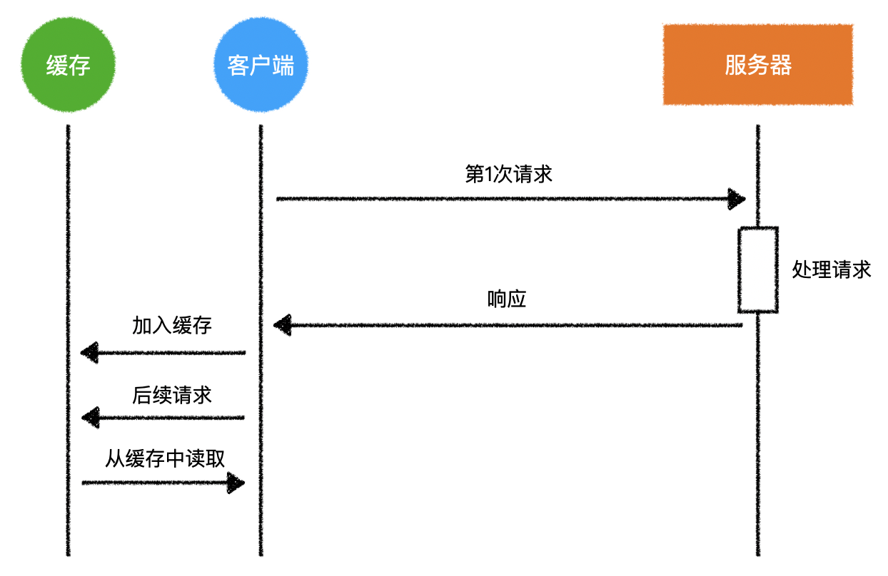
这里就设计到一个缓存策略的问题，这些问题包括：
- 哪些资源需要加入到缓存，哪些不需要？
- 缓存的时间是多久呢？
- 如果服务器的资源有改动，客户端如何更新缓存呢？
- 如果缓存过期了，可是服务器上的资源并没有发生变动，又该如何处理呢？
- …….
要回答这些问题，就必须要清楚http中关于缓存的协议
理解了 http 的缓存协议，自然就能回答上面的问题了。
一般来说页面本身不会缓存
比如请求百度，百度这个页面地址不会进行缓存，因为一旦连网页主体都进行缓存了，一旦网页内容有所变化，无法第一时间识别到
来自服务器的缓存指令
当客户端发出一个get请求到服务器，服务器可能有以下的内心活动：「你请求的这个资源，我很少会改动它，干脆你把它缓存起来吧，以后就不要来烦我了」
为了表达这个美好的愿望，服务器在响应头中加入了以下内容：
Cache-Control: max-age=3600
ETag: W/"121-171ca289ebf"
Date: Thu, 30 Apr 2020 12:39:56 GMT
Last-Modified: Thu, 30 Apr 2020 08:16:31 GMT
这个响应头表达了下面的信息：
Cache-Control: max-age=3600，我希望你把这个资源缓存起来，缓存时间是 3600 秒（1 小时）ETag: W/"121-171ca289ebf"，这个资源的编号是W/"121-171ca289ebf"Date: Thu, 30 Apr 2020 12:39:56 GMT，我给你响应这个资源的服务器时间是格林威治时间2020-04-30 12:39:56Last-Modified: Thu, 30 Apr 2020 08:16:31 GMT，这个资源的上一次修改时间是格林威治时间2020-04-30 08:16:31
这个美好的缓存愿望，就这样通过响应头传递给客户端了
如果客户端是其他应用程序，可能并不会理会服务器的愿望，也就是说，可能根本不会缓存任何东西。
但是凑巧客户端是一个浏览器，它和服务器一直以来都是相亲相爱的小伙伴，当它看到服务器的这个响应头表达的美好愿望后，立即忙起来：
- 浏览器把这次请求得到的响应体缓存到本地文件中
- 浏览器标记这次请求的请求方法和请求路径
- 浏览器标记这次缓存的时间是 3600 秒
- 浏览器记录服务器的响应时间是格林威治时间
2020-04-30 12:39:56 - 浏览器记录服务器给予的资源编号
W/"121-171ca289ebf" - 浏览器记录资源的上一次修改时间是格林威治时间
2020-04-30 08:16:31
这一次的记录非常重要，它为以后浏览器要不要去请求服务器提供了各种依据。
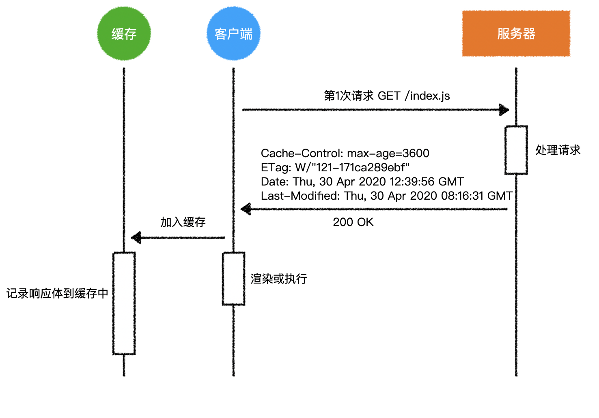
来自客户端的缓存指令
当客户端收拾好行李，准备再次请求GET /index.js时，它突然想起了一件事：我需要的东西在不在缓存里呢？
此时，客户端会到缓存中去寻找是否有缓存的资源
寻找的过程如下：
- 缓存中是否有匹配的请求方法和路径？
- 如果有，该缓存资源是否还有效呢？
以上两个验证会导致浏览器产生不同的行为

要验证是否有匹配的缓存非常简单，只需要验证当前的请求方法GET和当前的请求路径/index.js是否有对应的缓存存在即可
如果没有，就直接请求服务器，就和第一次请求服务器时一样，这种情况没有什么好讨论的
关键在于验证缓存是否有效
如何验证呢？
非常简单，就是把max-age + Date，得到一个过期时间，看看这个过期时间是否大于当前时间，如果是，则表示缓存还没有过期，仍然有效，如果不是，则表示缓存失效。
缓存有效
当浏览器发现缓存有效时，完全不会请求服务器，直接使用缓存即可得到结果
此时，如果你断开网络，会发现资源仍然可用
这种情况会极大的降低服务器压力，但当服务器更改了资源后，浏览器是不知道的，只要缓存有效，它就会直接使用缓存
缓存无效
当浏览器发现缓存已经过期，它并不会简单的把缓存删除，而是抱着一丝希望，想问问服务器，我这个缓存还能继续使用吗？
于是，浏览器向服务器发出了一个带缓存的请求，又称之为协商缓存
所谓带缓存的请求，无非就是加入了以下的请求头：
If-Modified-Since: Thu, 30 Apr 2020 08:16:31 GMT
If-None-Match: W/"121-171ca289ebf"
它们表达了下面的信息：
If-Modified-Since: Thu, 30 Apr 2020 08:16:31 GMT，亲，你曾经告诉我，这个资源的上一次修改时间是格林威治时间2020-04-30 08:16:31，请问这个资源在这个时间之后有发生变动吗？If-None-Match: W/"121-171ca289ebf"，亲，你曾经告诉我，这个资源的编号是W/"121-171ca289ebf，请问这个资源的编号发生变动了吗？
其实，这两个问题可以合并为一个问题：快说！资源到底变了没有！
之所以要发两个信息，是为了兼容不同的服务器，因为有些服务器只认If-Modified-Since，有些服务器只认If-None-Match，有些服务器两个都认
目前的很多服务器，只要发现
If-None-Match存在，就不会去看 If-Modified-Since
If-Modified-Since是http1.0版本的规范
If-None-Match是http1.1的规范
此时，问题又抛给了服务器，接下来，就是服务器的表演时间了
服务器可能会产生两个情况：
- 缓存已经失效
- 缓存仍然有效
如果是第一种情况——缓存已经失效，那么非常简单，服务器再次给予一个正常的响应（响应码200 带响应体），同时可以附带上新的缓存指令，这就回到了上一节——来自服务器的缓存指令
这样一来，客户端就会重新缓存新的内容
但如果服务器觉得缓存仍然有效，它可以通过一种极其简单的方式告诉客户端：
- 响应码为
304 Not Modified - 无响应体
- 响应头带上新的缓存指令，见上一节——来自服务器的缓存指令
这样一来，就相当于告诉客户端：「你的缓存资源仍然可用，我给你一个新的缓存时间，你那边更新一下就可以了」
于是，客户端就继续 happy 的使用缓存了
这样一来，可以最大程度的减少网络传输，因为如果资源还有效，服务器就不会传输消息体
它们完整的交互过程如下：
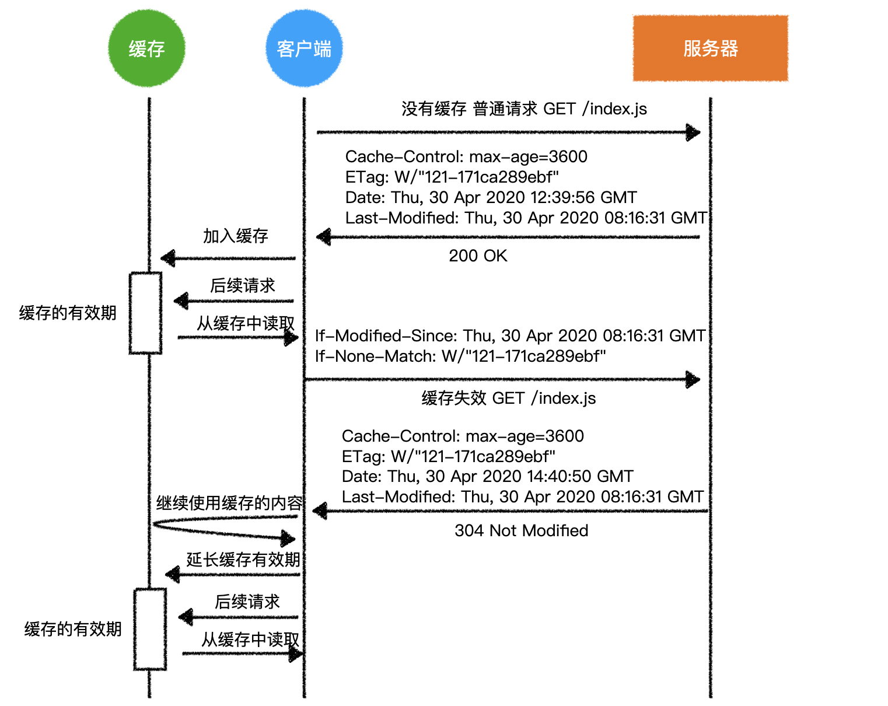
细节
上面描述了客户端缓存的基本概念和过程
但其中仍然有不少细节值得我们注意
ETag
资源的唯一 ID
ETag: W/“121-171ca289ebf”
Date
给予资源的时间(服务器时间)
Last-Modified
资源的最后改动时间
Cache-Control
在上述的讲解中，Cache-Control是服务器向客户端响应的一个消息头，它提供了一个max-age用于指定缓存时间。
实际上，Cache-Control还可以设置下面一个或多个值：
public：指示服务器资源是公开的。比如有一个页面资源，所有人看到的都是一样的。这个值对于浏览器而言没有什么意义，但可能在某些场景可能有用。本着「我告知，你随意」的原则，http协议中很多时候都是客户端或服务器告诉另一端详细的信息，至于另一端用不用，完全看它自己。private：指示服务器资源是私有的。比如有一个页面资源，每个用户看到的都不一样。这个值对于浏览器而言没有什么意义，但可能在某些场景可能有用。本着「我告知，你随意」的原则，http协议中很多时候都是客户端或服务器告诉另一端详细的信息，至于另一端用不用，完全看它自己。no-cache：告知客户端，你可以缓存这个资源，但是不要直接使用它。当你缓存之后，后续的每一次请求都需要附带缓存指令，让服务器告诉你这个资源有没有过期。（相当于缓存无效，去走这里面的流程来确定是否使用缓存）no-store：告知客户端，不要对这个资源做任何的缓存，之后的每一次请求都按照正常的普通请求进行。若设置了这个值，浏览器将不会对该资源做出任何的缓存处理。max-age：不再赘述
比如，Cache-Control: public, max-age=3600表示这是一个公开资源，请缓存 1 个小时。
Expires
在http1.0版本中，是通过Expires响应头来指定过期时间点的，例如：
Expires: Thu, 30 Apr 2020 23:38:38 GMT
到了http1.1版本，已更改为通过Cache-Control的max-age来记录了。
记录缓存时的有效期
浏览器会按照服务器响应头的要求，自动记录缓存到本地文件，并设置各种相关信息
在这些信息中，有效期尤为关键，它决定了这个缓存可以使用多久
浏览器会根据服务器不同的响应情况，设置不同的有效期
具体的有效期设置，按照下面的流程进行：
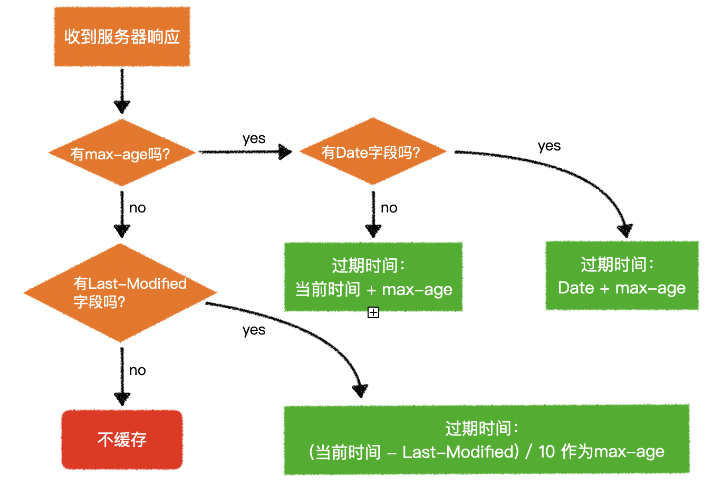
例如，当max-age设置为 0 时，缓存立即过期
虽然立即过期，但缓存仍然被记录下来，后续的请求通过缓存指令发送到服务器，来确认资源是否被更改。
因此，Cache-Control: max-age=0类似于Cache-Control: no-cache
Pragma
这是http1.0版本的消息头
当该消息头出现在请求中时，是向服务器表达：不要考虑任何缓存，给我一个正常的结果。
在http1.1版本中，可以在请求头中加入Cache-Control: no-cache实现同样的含义。
是的，
Cache-Control可以出现在请求头中
在Chrome浏览器中调试时，如果勾选了Disable cache，则发送的请求中会附带该信息
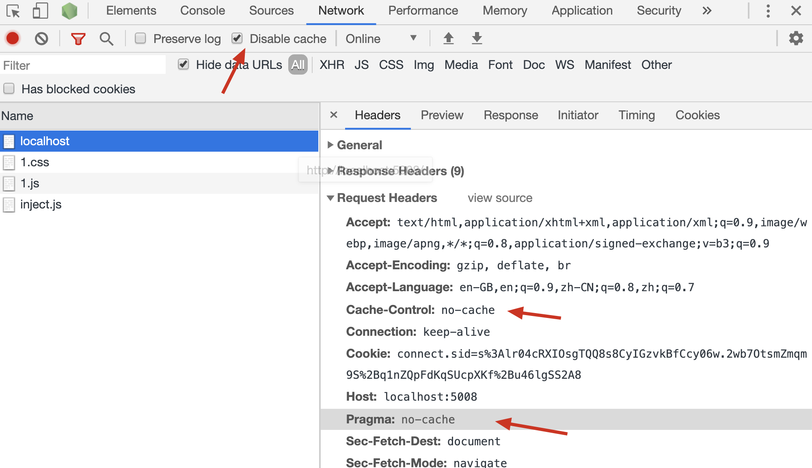
Vary
有的时候，是否有缓存，不仅仅是判断请求方法和请求路径是否匹配，可能还要判断头部信息是否匹配。
此时，就可以使用Vary字段来指定要区分的消息头
比如，当使用GET /personal.html请求服务器时，请求头中cookie的值不一样，得到的页面也不一样
如果还按照之前的做法，仅仅匹配请求方法和请求路径，如果cookie变动，你可能得到的仍然是之前的页面。
正确的做法如下：
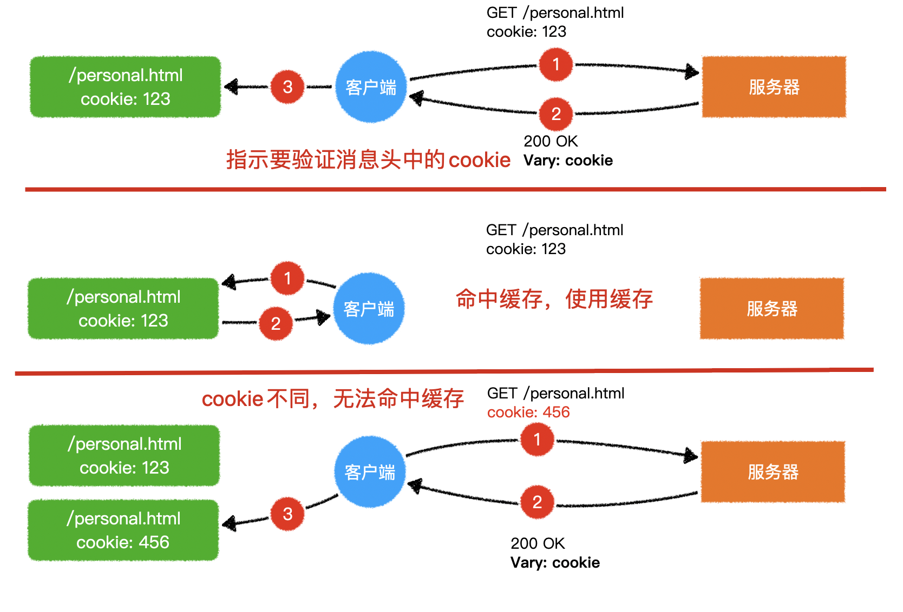
使用版本号或 hash
如果你是一个前端工程师，使用过vue或其他基于webpack搭建的工程
你会发现打包的结果中很多文件名类似于这样：
app.68297cd8.css
文件的中间部分使用了hash值
这样做的好处是，可以让客户端大胆的、长时间的缓存该文件，减轻服务器的压力
当文件改动后，它的文件hash值也会随之而变，比如变成了app.446fccb8.css
这样一来，客户端要请求新的文件时，就会发现路径从/app.68297cd8.css变成了app.446fccb8.css，由于之前的缓存路径无法匹配到，因此就会发送新的请求来获取新资源了。
以上是现代流行的做法。
而在古老的年代，还没有构建工具出现时，人们使用的办法是在资源路径后面加入版本号来获取新版本的文件
比如，页面中引入了一个 css 资源app.css，它可能的引入方式是：
<link href="/app.css?v=1.0.0" />
这样一来，缓存的路径是/app.css?v=1.0.0
当服务器的版本发生变化时，可以给予新的版本号，让 html 中的路径发生变动
<link href="/app.css?v=1.0.1" />
由于新的路径无法命中缓存，于是浏览器就会发送新的普通请求来获取这个资源
总结
最后，通过客户端和服务器两位大佬的视角，来总结一下以上内容
服务器视角
服务器无法知道客户端到底有没有像浏览器那样缓存文件，它只管根据请求的情况来决定如何响应
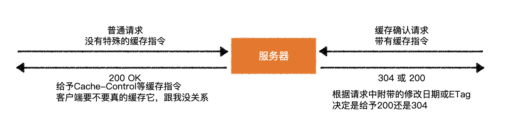
很多后端语言搭建的服务器都会自带自己的默认缓存规则，当然也支持不同程度的修改
浏览器视角
浏览器在发出请求时会判断要不要使用缓存
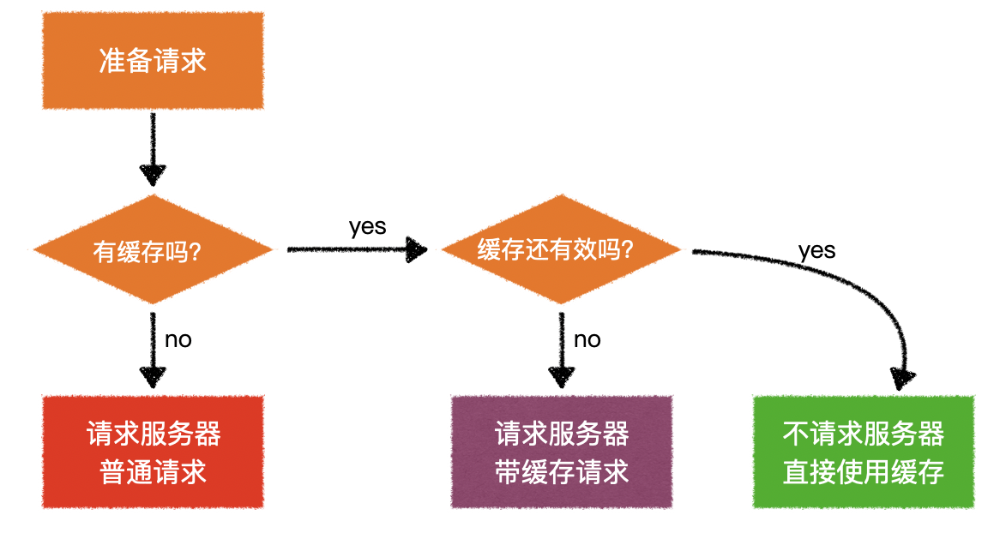
当收到服务器响应时，会自动根据缓存指令进行处理
浏览器其他缓存
ServiceWorker 来进行离线缓存(pwa)
cookie、localStorage、sessionStorage 来本地保存数据
缓存优先级
ServiceWorker（pwa） > 内存 > 硬盘 > 网络请求
强缓存
设置强缓存
Router.get('/', async (ctx) => { const getResource = () => { return new
Promise((res) => { fs.readFile("./fs/a.txt", (err, data) => { if (err) { return;
} res(data) }) }) } ctx.set('Cache-Control', 'max-age=10')
//设置强缓存，过期时间为10秒 ctx.body = await getResource(); })
memory cache （内存缓存）与 disk cache（硬盘缓存） 的区别？
两者都属于强缓存，主要区别在于存储位置和读取速度上
1）memory cache 表示缓存来自内存，disk cache 表示缓存来自硬盘
2）memory cache 要比 disk cache 快的多！从磁盘访问可能需要 5-20 毫秒，而内存访问只需要 100 纳秒甚至更快
- memory cache 特点：
当前 tab 页关闭后，数据将不存在（资源被释放掉了），再次打开相同的页面时，原来的 memory cache 会变成 disk cache - disk cache 特点：
关闭 tab 页甚至关闭浏览器后，数据依然存在，下次打开仍然会是 from disk cache
① 第一次打开掘金主页并刷新：缓存来自 memory cache 和 disk cache
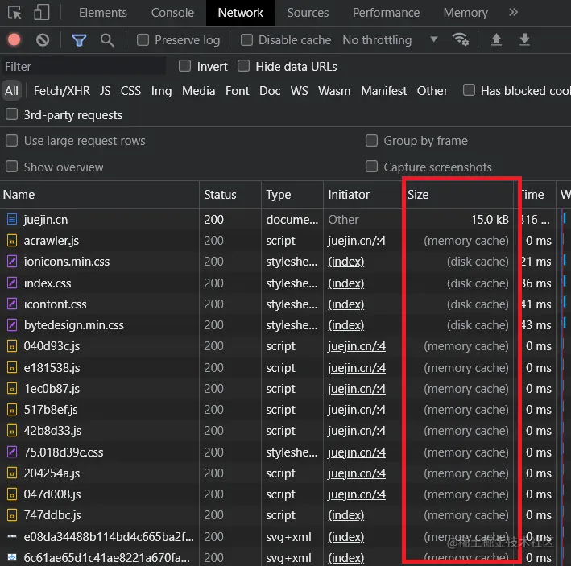
② 关闭页面再打开时：所有的缓存都来自 disk cache
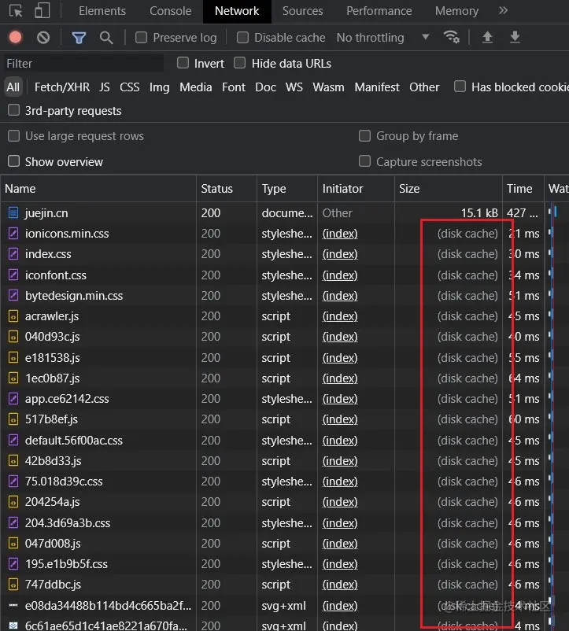
一般情况下，浏览器会将 js 和图片等文件解析执行后直接存入内存中，这样当刷新页面时，只需直接从内存中读取(from memory cache)；而 css 文件则会存入硬盘文件中，所以每次渲染页面都需要从硬盘读取缓存(from disk cache)
浏览器的数据存储
cookie (常用)
sessionStorage (常用)
localStorage (常用)
webSQL (已废弃)
IndexedDB (存大数据使用)
PWA(Service Worker)
File System Access API（用于存文件，读文件，写文件）没人用
IndexedDB
现有的浏览器数据储存方案，都不适合储存大量数据：Cookie 的大小不超过 4KB，且每次请求都会发送回服务器；LocalStorage 在 2.5MB 到 10MB 之间（各家浏览器不同），而且不提供搜索功能，不能建立自定义的索引。所以，需要一种新的解决方案，这就是 IndexedDB 诞生的背景。
官方解释
IndexedDB 是一种底层 API，用于在客户端存储大量的结构化数据（也包括文件/二进制大型对象（blobs））。该 API 使用索引实现对数据的高性能搜索。虽然 Web Storage 在存储较少量的数据很有用，但对于存储更大量的结构化数据来说力不从心。而 IndexedDB 提供了这种场景的解决方案。
通俗地说，IndexedDB 就是浏览器提供的本地数据库，它可以被网页脚本创建和操作。IndexedDB 允许储存大量数据，提供查找接口，还能建立索引。这些都是 LocalStorage 所不具备的。就数据库类型而言，IndexedDB 不属于关系型数据库（不支持 SQL 查询语句），更接近 NoSQL 数据库。
下表罗列出了几种常见的客户端存储方式的对比：
| 会话期 Cookie | 持久性 Cookie | sessionStorage | localStorage | IndexedDB | WebSQL | |
|---|---|---|---|---|---|---|
| 存储大小 | 4kb | 4kb | 2.5~10MB | 2.5~10MB | >250MB | 已废弃 |
| 失效时间 | 浏览器关闭自动清除 | 设置过期时间，到期后清除 | 浏览器关闭后清除 | 永久保存（除非手动清除） | 手动更新或删除 | 已废弃 |
IndexedDB 具有以下特点。
- 键值对储存：IndexedDB 内部采用对象仓库（ object store ）存放数据。所有类型的数据都可以直接存入，包括 JavaScript 对象。对象仓库中，数据以“键值对”的形式保存，每一个数据记录都有对应的主键，主键是独一无二的，不能有重复，否则会抛出一个错误。
- 异步：IndexedDB 操作时不会锁死浏览器，用户依然可以进行其他操作，这与 LocalStorage 形成对比，后者的操作是同步的。异步设计是为了防止大量数据的读写，拖慢网页的表现。
- 支持事务：IndexedDB 支持事务（ transaction ），这意味着一系列操作步骤之中，只要有一步失败，整个事务就都取消，数据库回滚到事务发生之前的状态，不存在只改写一部分数据的情况。这和 MySQL 等数据库的事务类似。
- 同源限制：IndexedDB 受到同源限制，每一个数据库对应创建它的域名。网页只能访问自身域名下的数据库，而不能访问跨域的数据库。
- 储存空间大：这是 IndexedDB 最显著的特点之一。IndexedDB 的储存空间比 LocalStorage 大得多，一般来说不少于 250MB，甚至没有上限。
- 支持二进制储存：IndexedDB 不仅可以储存字符串，还可以储存二进制数据（ArrayBuffer 对象和 Blob 对象）。
IndexedDB 主要使用在于客户端需要存储大量的数据的场景下：
- 数据可视化等界面，大量数据，每次请求会消耗很大性能。
- 即时聊天工具，大量消息需要存在本地。
- 其它存储方式容量不满足时，不得已使用 IndexedDB
IndexedDB 重要概念
IndexedDB 是一个比较复杂的 API，涉及不少概念。它把不同的实体，抽象成一个个对象接口。学习这个 API，就是学习它的各种对象接口。
- 数据库：IDBDatabase 对象
- 对象仓库：IDBObjectStore 对象
- 索引：IDBIndex 对象
- 事务：IDBTransaction 对象
- 操作请求：IDBRequest 对象
- 指针：IDBCursor 对象
- 主键集合：IDBKeyRange 对象
下面是一些主要的概念。
（1）数据库
数据库是一系列相关数据的容器。每个域名（严格的说，是协议 + 域名 + 端口）都可以新建任意多个数据库。
IndexedDB 数据库有版本的概念。同一个时刻，只能有一个版本的数据库存在。如果要修改数据库结构（新增或删除表、索引或者主键），只能通过升级数据库版本完成。
（2）对象仓库
每个数据库包含若干个对象仓库（ object store ）。它类似于关系型数据库的表格。
（3）数据记录
对象仓库保存的是数据记录。每条记录类似于关系型数据库的行，但是只有主键和数据体两部分。主键用来建立默认的索引，必须是不同的，否则会报错。主键可以是数据记录里面的一个属性，也可以指定为一个递增的整数编号。
{ id: 1, text: 'foo' }
上面的对象中，id 属性可以当作主键。
数据体可以是任意数据类型，不限于对象。
（4）索引
为了加速数据的检索，可以在对象仓库里面，为不同的属性建立索引。
在关系型数据库当中也有索引的概念，我们可以给对应的表字段添加索引，以便加快查找速率。在 IndexedDB 中同样有索引，我们可以在创建 store 的时候同时创建索引，在后续对 store 进行查询的时候即可通过索引来筛选，给某个字段添加索引后，在后续插入数据的过成功，索引字段便不能为空。
（5）事务
数据记录的读写和删改，都要通过事务完成。事务对象提供 error、abort 和 complete 三个事件，用来监听操作结果。
（6）指针（游标） 游标是 IndexedDB 数据库新的概念，大家可以把游标想象为一个指针，比如我们要查询满足某一条件的所有数据时，就需要用到游标，我们让游标一行一行的往下走，游标走到的地方便会返回这一行数据，此时我们便可对此行数据进行判断，是否满足条件。
操作
WebSQL
目前来看，WebSQL 已经不再是 W3C 推荐规范，官方也已经不再维护了
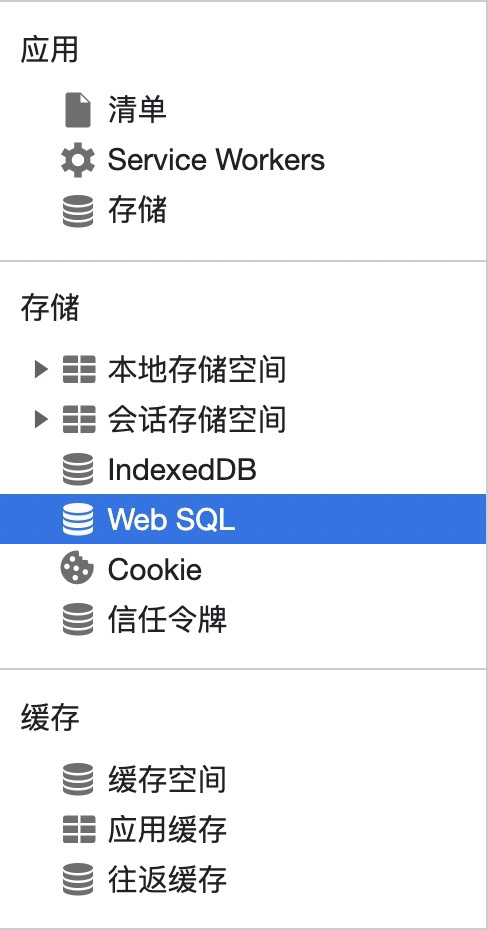
在 WebSQL 中，有 3 个核心方法：
- openDatabase：这个方法使用现有的数据库或者新建的数据库创建一个数据库对象。
- transaction：这个方法让我们能够控制一个事务，以及基于这种情况执行提交或者回滚。
- executeSql：这个方法用于执行实际的 SQL 查询。
打开数据库
openDatabase( ) 方法对应的 5 个参数：
- 数据库名称
- 版本号
- 描述文本
- 数据库大小
- 创建回调
var db = openDatabase("mydb", "1.0", "Test DB", 2 * 1024 * 1024);
在上面的代码中，我们尝试打开一个名为 mydb 的数据库，因为第一次不存在此数据库，所以会创建该数据库，版本号为 1.0，大小为 2M。
执行操作
执行操作使用 database.transaction( ) 函数：
var db = openDatabase("mydb", "1.0", "Test DB", 2 * 1024 * 1024);
db.transaction(function (tx) {
tx.executeSql("CREATE TABLE IF NOT EXISTS LOGS (id unique, log)");
});
插入数据
var db = openDatabase("mydb", "1.0", "Test DB", 2 * 1024 * 1024);
db.transaction(function (tx) {
tx.executeSql("CREATE TABLE IF NOT EXISTS STU (id unique, name, age)");
tx.executeSql('INSERT INTO STU (id, name, age) VALUES (1, "张三", 18)');
tx.executeSql('INSERT INTO STU (id, name, age) VALUES (2, "李四", 20)');
});
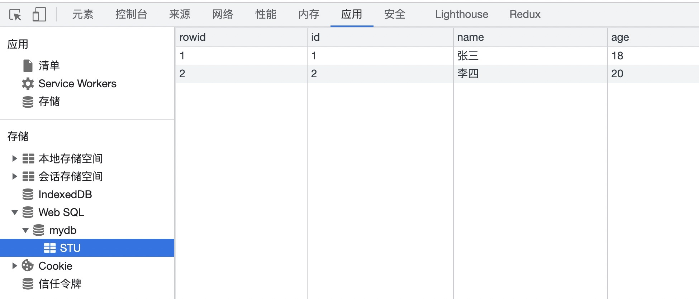
读取数据
var stuName = "谢杰";
var stuAge = 18;
// 打开数据库
var db = openDatabase("mydb", "1.0", "Test DB", 2 * 1024 * 1024);
// 插入数据
db.transaction(function (tx) {
tx.executeSql("CREATE TABLE IF NOT EXISTS STU (id unique, name, age)");
tx.executeSql('INSERT INTO STU (id, name, age) VALUES (1, "张三", 18)');
tx.executeSql('INSERT INTO STU (id, name, age) VALUES (2, "李四", 20)');
tx.executeSql("INSERT INTO STU (id, name, age) VALUES (3, ?, ?)", [
stuName,
stuAge,
]);
});
// 读取操作
db.transaction(function (tx) {
tx.executeSql(
"SELECT * FROM STU",
[],
function (tx, results) {
var len = results.rows.length,
i;
msg = "<p>查询记录条数: " + len + "</p>";
document.querySelector("#status").innerHTML += msg;
for (i = 0; i < len; i++) {
msg =
"<p><b>" +
results.rows.item(i).name +
":" +
results.rows.item(i).age +
"</b></p>";
document.querySelector("#status").innerHTML += msg;
}
},
null
);
});
在上面的代码中，第二个部分是读取数据的操作。这里我们仍然是使用的 executeSql( ) 方法来执行的 SQL 命令，但是用法又不一样了。是时候来看一下完整的 executeSql( ) 方法是什么样了。
executeSql(sqlStatement, arguments, callback, errorCallback);
File System Access API
file System Access API 规范：https://wicg.github.io/file-system-access/
关于 File System Access API，这套方案应该是未来的主角。它提供了比较稳妥的本地文件交互模式，即保证了实用价值，又保障了用户的数据安全。
这个 API 对前端来说意义不小。有了这个功能，Web 可以提供更完整的功能链路，从打开、到编辑、到保存，一套到底。不过遗憾的是目前只有 Chrome 支持。
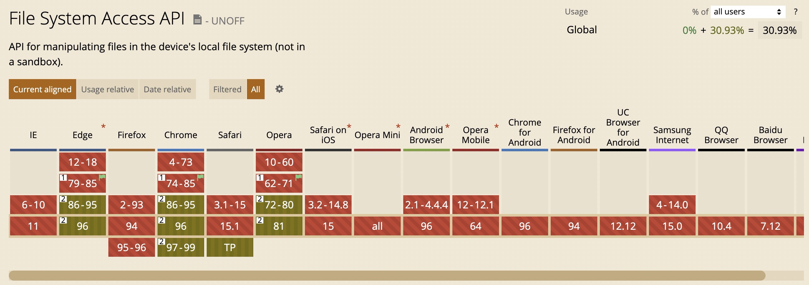
（图为该 API 目前在各大浏览器的支持情况，可以看到全线飙红）
目前针对该 API 的相关资料，无论是中文还是英文都比较少，如果对该 API 感兴趣的同学，下面给出两个扩展阅读资料（英文）
- MDN：https://developer.mozilla.org/en-US/docs/Web/API/File_System_Access_API
- web.dev：https://web.dev/file-system-access/
浏览器缓存
什么是浏览器缓存
在正式开始讲解浏览器缓存之前，我们先来回顾一下整个 Web 应用的流程。
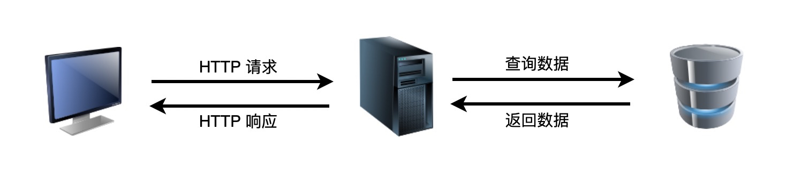
上图展示了一个 Web 应用最最简单的结构。客户端向服务器端发送 HTTP 请求，服务器端从数据库获取数据，然后进行计算处理，之后向客户端返回 HTTP 响应。
那么上面整个流程中，哪些地方比较耗费时间呢？总结起来有如下两个方面：
- 发送请求的时候
- 涉及到大量计算的时候
一般来讲，上面两个阶段比较耗费时间。
首先是发送请求的时候。这里所说的请求，不仅仅是 HTTP 请求，也包括服务器向数据库发起查询数据的请求。
其次是大量计算的时候。一般涉及到大量计算，主要是在服务器端和数据库端，服务器端要进行计算这个很好理解，数据库要根据服务器发送过来的查询命令查询到对应的数据，这也是比较耗时的一项工作。
因此，单论缓存的话，我们其实在很多地方都可以做缓存。例如：
- 数据库缓存
- CDN 缓存
- 代理服务器缓存
- 浏览器缓存
- 应用层缓存
针对各个地方做出适当的缓存，都能够很大程度的优化整个 Web 应用的性能。但是要逐一讨论的话，是一个非常大的工程量，所以本文我们主要来看一下浏览器缓存，这也是和我们前端开发息息相关的。
整个浏览器的缓存过程如下：
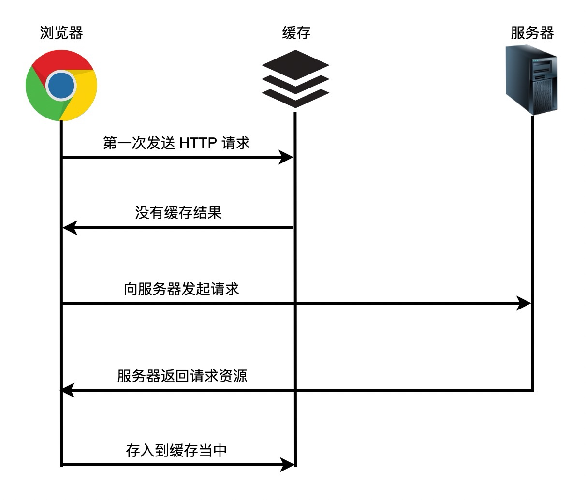从上图我们可以看到，整个浏览器端的缓存其实没有想象的那么复杂。其最基本的原理就是：
- 浏览器每次发起请求，都会先在浏览器缓存中查找该请求的结果以及缓存标识
- 浏览器每次拿到返回的请求结果都会将该结果和缓存标识存入浏览器缓存中
以上两点结论就是浏览器缓存机制的关键，它确保了每个请求的缓存存入与读取，只要我们再理解浏览器缓存的使用规则，那么所有的问题就迎刃而解了。
接下来，我将从两个维度来介绍浏览器缓存：
- 缓存的存储位置
- 缓存的类型
按照缓存位置分类
从缓存位置上来说分为四种，并且各自有优先级，当依次查找缓存且都没有命中的时候，才会去请求网络。这四种依次为：
- Service Worker
- Memory Cache
- Disk Cache
- Push Cache
Service Worker
Service Worker 是运行在浏览器背后的独立线程，一般可以用来实现缓存功能。
使用 Service Worker 的话，传输协议必须为 HTTPS。因为 Service Worker 中涉及到请求拦截，所以必须使用 HTTPS 协议来保障安全。
Service Worker 的缓存与浏览器其他内建的缓存机制不同，它可以让我们自由控制缓存哪些文件、如何匹配缓存、如何读取缓存，并且缓存是持续性的。
Service Worker 实现缓存功能一般分为三个步骤：首先需要先注册 Service Worker，然后监听到 install 事件以后就可以缓存需要的文件，那么在下次用户访问的时候就可以通过拦截请求的方式查询是否存在缓存，存在缓存的话就可以直接读取缓存文件，否则就去请求数据。.
当 Service Worker 没有命中缓存的时候，我们需要去调用 fetch 函数获取数据。也就是说，如果我们没有在 Service Worker 命中缓存的话，会根据缓存查找优先级去查找数据。
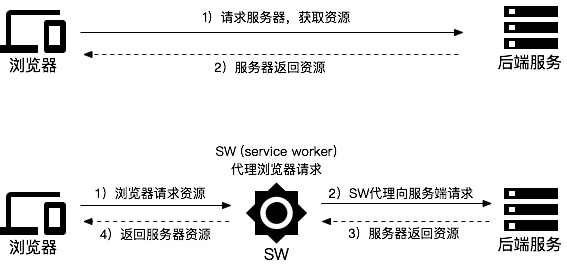
但是不管我们是从 Memory Cache 中还是从网络请求中获取的数据，浏览器都会显示我们是从 Service Worker 中获取的内容。
Service Worker 和 PWA 的关系
Service Worker 和 PWA（Progressive Web Apps， 渐进式 Web 应用） 密切相关，Service Worker 是构建 PWA 的关键技术之一。
Service Worker 是一种运行在浏览器背后的脚本， 它能够拦截和处理网络请求， 包括缓存资源、 拦截网络请求等。 通过 Service Worker，Web 应用可以实现离线工作、 推送通知、 服务端渲染等功能， 从而提升用户体验和应用的性能。 这些特性使得 Service Worker 成为实现 PWA 不可或缺的技术。
PWA 是一种通过现代 Web 技术构建的应用， 旨在提供与原生应用相似的用户体验。 通过添加 Service Worker 和 App Manifest 等特性，PWA 能够将网页应用转化为可安装的应用， 支持离线工作、 推送通知等功能。 这使得 PWA 能够在没有安装原生应用的情况下， 提供接近原生应用的用户体验。
Memory Cache
Memory Cache 也就是内存中的缓存，主要包含的是当前中页面中已经抓取到的资源，例如页面上已经下载的样式、脚本、图片等。
读取内存中的数据肯定比磁盘快，内存缓存虽然读取高效，可是缓存持续性很短，会随着进程的释放而释放。一旦我们关闭 Tab 页面，内存中的缓存也就被释放了。
那么既然内存缓存这么高效，我们是不是能让数据都存放在内存中呢？
这是不可能的。计算机中的内存一定比硬盘容量小得多，操作系统需要精打细算内存的使用，所以能让我们使用的内存必然不多。
当我们访问过页面以后，再次刷新页面，可以发现很多数据都来自于内存缓存。
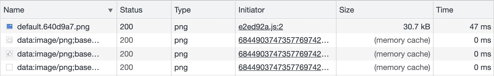
Memory Cache 机制保证了页面中如果有两个相同的请求。
例如两个 src 相同的 ，两个 href 相同的 ，都实际只会被请求最多一次，避免浪费。
Disk Cache
Disk Cache 也就是存储在硬盘中的缓存，读取速度慢点，但是什么都能存储到磁盘中，比之 Memory Cache 胜在容量和存储时效性上。
在所有浏览器缓存中，Disk Cache 覆盖面基本是最大的。它会根据 HTTP header 中的字段判断哪些资源需要缓存，哪些资源可以不请求直接使用，哪些资源已经过期需要重新请求。
并且即使在跨站点的情况下，相同地址的资源一旦被硬盘缓存下来，就不会再次去请求数据。绝大部分的缓存都来自 Disk Cache。
凡是持久性存储都会面临容量增长的问题，Disk Cache 也不例外。
在浏览器自动清理时，会有特殊的算法去把“最老的”或者“最可能过时的”资源删除，因此是一个一个删除的。不过每个浏览器识别“最老的”和“最可能过时的”资源的算法不尽相同，这也可以看作是各个浏览器差异性的体现。
Push Cache（http2 缓存）不常用
Push Cache 翻译成中文叫做“推送缓存”，是属于 HTTP/2 中新增的内容。
当以上三种缓存都没有命中时，它才会被使用。它只在会话（Session）中存在，一旦会话结束就被释放，并且缓存时间也很短暂，在 Chrome 浏览器中只有 5 分钟左右，同时它也并非严格执行 HTTP/2 头中的缓存指令。
Push Cache 在国内能够查到的资料很少，也是因为 HTTP2 在国内还不够普及。
这里推荐阅读 Jake Archibald 的 HTTP/2 push is tougher than I thought 这篇文章。
文章中的几个结论：
- 所有的资源都能被推送，并且能够被缓存，但是 Edge 和 Safari 浏览器支持相对比较差
- 可以推送 no-cache 和 no-store 的资源
- 一旦连接被关闭，Push Cache 就被释放
- 多个页面可以使用同一个 HTTP/2 的连接，也就可以使用同一个 Push Cache。这主要还是依赖浏览器的实现而定，出于对性能的考虑，有的浏览器会对相同域名但不同的 tab 标签使用同一个 HTTP 连接。
- Push Cache 中的缓存只能被使用一次
- 浏览器可以拒绝接受已经存在的资源推送
- 你可以给其他域名推送资源
disk cache 与 memory cache
它会根据 HTTP Herder 中的字段判断哪些资源需要缓存，哪些资源可以不请求直接使用，哪些资源已经过期需要重新请求。
一个数据是保存在 disk cache 还是 memory cache 都是由浏览器自行决定的
其他
如果一个请求在上述几个位置都没有找到缓存，那么浏览器会正式发送网络请求去获取内容。之后为了提升之后请求的缓存命中率，自然要把这个资源添加到缓存中去。具体来说：
- 根据 Service Worker 中的 handler 决定是否存入 Cache Storage (额外的缓存位置)。Service Worker 是由开发者编写的额外的脚本，且缓存位置独立，出现也较晚，使用还不算太广泛。
- Memory Cache 保存一份资源的引用，以备下次使用。Memory Cache 是浏览器为了加快读取缓存速度而进行的自身的优化行为，不受开发者控制，也不受 HTTP 协议头的约束，算是一个黑盒。
- 根据 HTTP 头部的相关字段（ Cache-control、Pragma 等 ）决定是否存入 Disk Cache。Disk Cache 也是平时我们最熟悉的一种缓存机制，也叫 HTTP Cache (因为不像 Memory Cache，它遵守 HTTP 协议头中的字段)。平时所说的强制缓存，协商缓存，以及 Cache-Control 等，也都归于此类。
缓存优先级
浏览器缓存的优先级从高到低依次为：Service Worker 缓存 > 强制缓存 > 协商缓存 > Web Storage 缓存。
按照缓存类型分类
按照缓存类型来进行分类，可以分为强制缓存和协商缓存。需要注意的是，无论是强制缓存还是协商缓存，都是属于 **Disk Cache** 或者叫做 **HTTP Cache** 里面的一种。
强制缓存
强制缓存的含义是，当客户端请求后，会先访问缓存数据库看缓存是否存在。如果存在则直接返回；不存在则请求真的服务器，响应后再写入缓存数据库。
强制缓存直接减少请求数，是提升最大的缓存策略。如果考虑使用缓存来优化网页性能的话，强制缓存应该是首先被考虑的。
可以造成强制缓存的字段是 Cache-control 和 Expires。
Expires
这是 HTTP 1.0 的字段，表示缓存到期时间，是一个绝对的时间 (当前时间+缓存时间)，如：
Expires: Thu, 10 Nov 2017 08:45:11 GMT
在响应消息头中，设置这个字段之后，就可以告诉浏览器，在未过期之前不需要再次请求。
但是，这个字段设置时有两个缺点：
- 由于是绝对时间，用户可能会将客户端本地的时间进行修改，而导致浏览器判断缓存失效，重新请求该资源。此外，即使不考虑自行修改的因素，时差或者误差等因素也可能造成客户端与服务端的时间不一致，致使缓存失效。
- 写法太复杂了。表示时间的字符串多个空格，少个字母，都会导致变为非法属性从而设置失效。
Cache-control
已知 Expires 的缺点之后，在 HTTP/1.1 中，增加了一个字段 Cache-control，该字段表示资源缓存的最大有效时间，在该时间内，客户端不需要向服务器发送请求
这两者的区别就是前者是绝对时间，而后者是相对时间。如下：
Cache-control: max-age=2592000
下面列举一些 Cache-control 字段常用的值：(完整的列表可以查看 MDN)
- max-age：即最大有效时间，在上面的例子中我们可以看到
- must-revalidate：如果超过了 max-age 的时间，浏览器必须向服务器发送请求，验证资源是否还有效。
- no-cache：虽然字面意思是“不要缓存”，但实际上还是要求客户端缓存内容的，只是是否使用这个内容由后续的协商缓存来决定。
- no-store：真正意义上的“不要缓存”。所有内容都不走缓存，包括强制缓存和协商缓存。
- public：所有的内容都可以被缓存（包括客户端和代理服务器， 如 CDN ）
- private：所有的内容只有客户端才可以缓存，代理服务器不能缓存。默认值。
这些值可以混合使用，例如 Cache-control:public, max-age=2592000。在混合使用时，它们的优先级如下图：
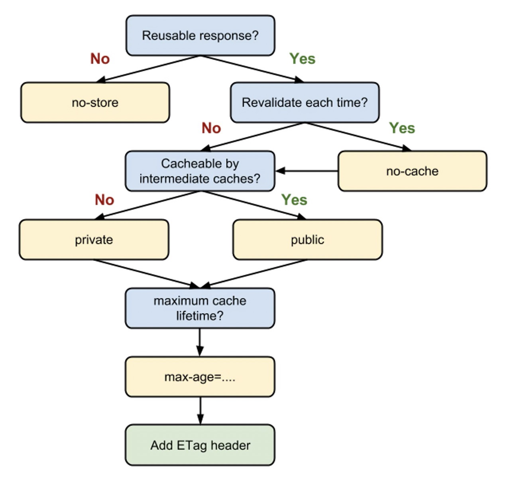
max-age=0 和 no-cache 等价吗？
从规范的字面意思来说，max-age 到期是 应该（ SHOULD ）重新验证，而 no-cache 是 必须（ MUST ）重新验证。但实际情况以浏览器实现为准，大部分情况他们俩的行为还是一致的。（如果是 max-age=0, must-revalidate 就和 no-cache 等价了）
在 HTTP/1.1 之前，如果想使用 no-cache，通常是使用 Pragma 字段，如 Pragma: no-cache（这也是 Pragma 字段唯一的取值）。
但是这个字段只是浏览器约定俗成的实现，并没有确切规范，因此缺乏可靠性。它应该只作为一个兼容字段出现，在当前的网络环境下其实用处已经很小。
总结一下，自从 HTTP/1.1 开始，Expires 逐渐被 Cache-control 取代。
Cache-control 是一个相对时间，即使客户端时间发生改变，相对时间也不会随之改变，这样可以保持服务器和客户端的时间一致性。而且 Cache-control 的可配置性比较强大。Cache-control 的优先级高于 Expires。
为了兼容 HTTP/1.0 和 HTTP/1.1，实际项目中两个字段我们都会设置。
协商缓存
当强制缓存失效（超过规定时间）时，就需要使用协商缓存，由服务器决定缓存内容是否失效。
流程上说，浏览器先请求缓存数据库，返回一个缓存标识。之后浏览器拿这个标识和服务器通讯。如果缓存未失效，则返回 HTTP 状态码 304 表示继续使用，于是客户端继续使用缓存；
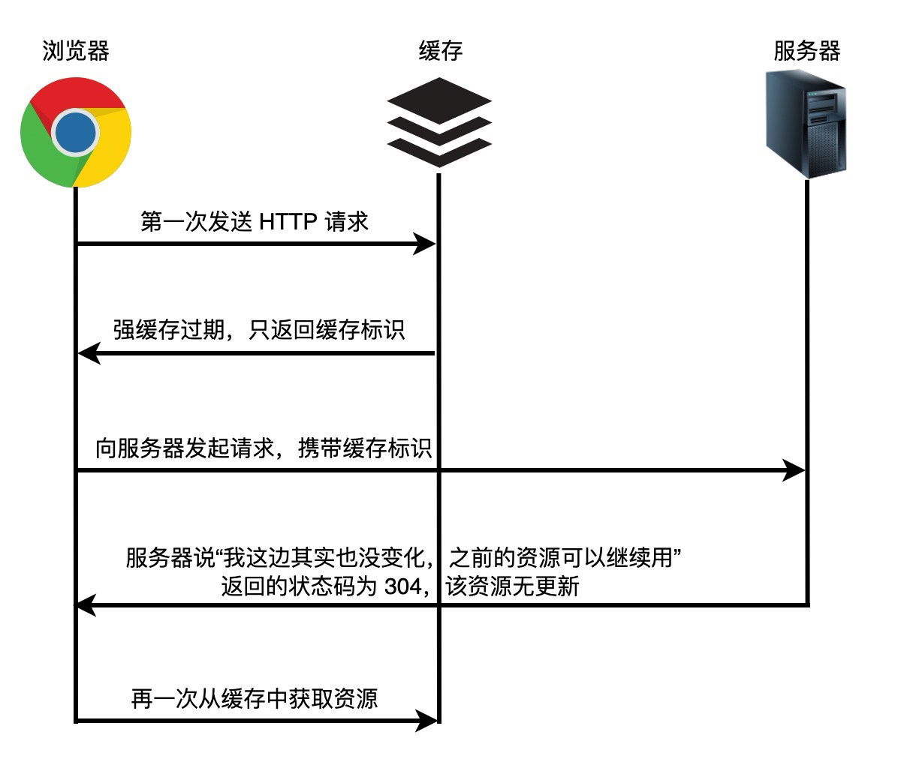
如果失效，则返回新的数据和缓存规则，浏览器响应数据后，再把规则写入到缓存数据库。
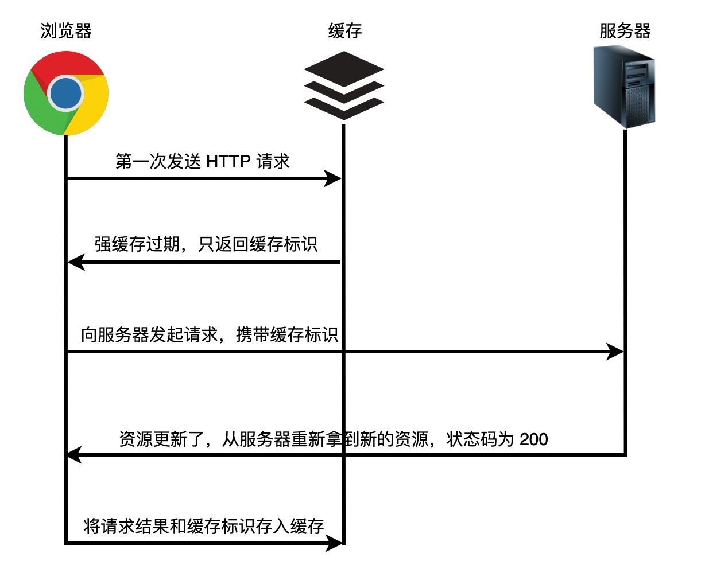
协商缓存在请求数上和没有缓存是一致的，但如果是 304 的话，返回的仅仅是一个状态码而已，并没有实际的文件内容，因此 在响应体体积上的节省是它的优化点。
它的优化主要体现在“响应”上面通过减少响应体体积，来缩短网络传输时间。所以和强制缓存相比提升幅度较小，但总比没有缓存好。
协商缓存是可以和强制缓存一起使用的，作为在强制缓存失效后的一种后备方案。实际项目中他们也的确经常一同出现。
对比缓存有 2 组字段（不是两个）：
- Last-Modified & If-Modified-Since
- Etag & If-None-Match
Last-Modified & If-Modified-Since
- 服务器通过 Last-Modified 字段告知客户端，资源最后一次被修改的时间，例如：
Last-Modified: Mon, 10 Nov 2018 09:10:11 GMT
- 浏览器将这个值和内容一起记录在缓存数据库中。
- 下一次请求相同资源时时，浏览器从自己的缓存中找出“不确定是否过期的”缓存。因此在请求头中将上次的 Last-Modified 的值写入到请求头的 If-Modified-Since 字段
- 服务器会将 If-Modified-Since 的值与 Last-Modified 字段进行对比。如果相等，则表示未修改，响应 304；反之，则表示修改了，响应 200 状态码，并返回数据。
但是他还是有一定缺陷的：
- 如果资源更新的速度是秒以下单位，那么该缓存是不能被使用的，因为它的时间单位最低是秒。
- 如果文件是通过服务器动态生成的，那么该方法的更新时间永远是生成的时间，尽管文件可能没有变化，所以起不到缓存的作用。
因此在 HTTP/1.1 出现了 ETag 和 If-None-Match
Etag & If-None-Match
为了解决上述问题，出现了一组新的字段 Etag 和 If-None-Match。
Etag 存储的是文件的特殊标识（一般都是一个 Hash 值），服务器存储着文件的 Etag 字段。
之后的流程和 Last-Modified 一致，只是 Last-Modified 字段和它所表示的更新时间改变成了 Etag 字段和它所表示的文件 hash，把 If-Modified-Since 变成了 If-None-Match。
浏览器在下一次加载资源向服务器发送请求时，会将上一次返回的 Etag 值放到请求头里的 If-None-Match 里，服务器只需要比较客户端传来的 If-None-Match 跟自己服务器上该资源的 ETag 是否一致，就能很好地判断资源相对客户端而言是否被修改过了。
如果服务器发现 ETag 匹配不上，那么直接以常规 GET 200 回包形式将新的资源（当然也包括了新的 ETag）发给客户端；如果 ETag 是一致的，则直接返回 304 告诉客户端直接使用本地缓存即可。
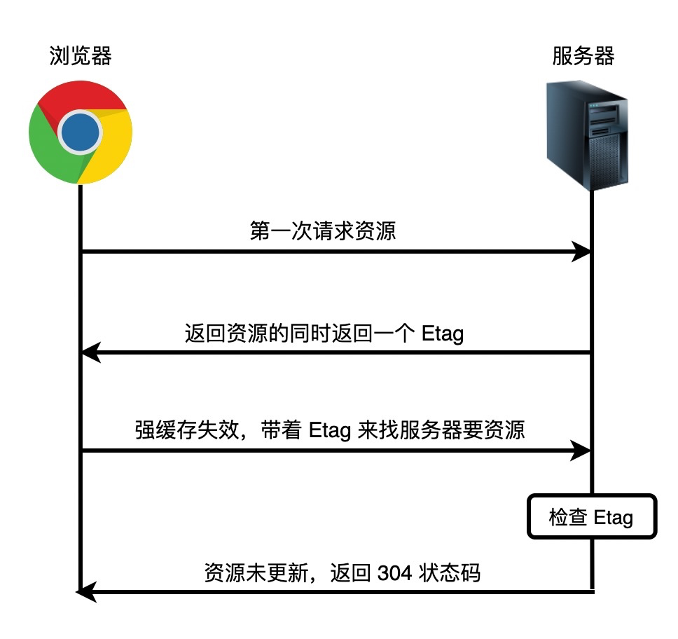
两者之间的简单对比：
- 首先在精确度上，Etag 要优于 Last-Modified。
Last-Modified 的时间单位是秒，如果某个文件在 1 秒内改变了多次，那么 Last-Modified 其实并没有体现出来修改，但是 Etag 是一个 Hash 值，每次都会改变从而确保了精度。 - 第二在性能上，Etag 要逊于 Last-Modified，毕竟 Last-Modified 只需要记录时间，而 Etag 需要服务器通过算法来计算出一个 Hash 值。
- 第三在优先级上，服务器校验优先考虑 Etag，也就是说 Etag 的优先级高于 Last-Modified。
缓存读取规则
接下来我们来对上面所讲的缓存做一个总结。
当浏览器要请求资源时：
- 从 Service Worker 中获取内容（ 如果设置了 Service Worker ）
- 查看 Memory Cache
- 查看 Disk Cache。这里又细分：
- 如果有强制缓存且未失效，则使用强制缓存，不请求服务器。这时的状态码全部是 200
- 如果有强制缓存但已失效，使用协商缓存，比较后确定 304 还是 200
- 发送网络请求，等待网络响应
- 把响应内容存入 Disk Cache (如果 HTTP 响应头信息有相应配置的话)
- 把响应内容的引用存入 Memory Cache (无视 HTTP 头信息的配置)
- 把响应内容存入 Service Worker 的 Cache Storage（ 如果设置了 Service Worker ）
其中针对第 3 步，具体的流程图如下：
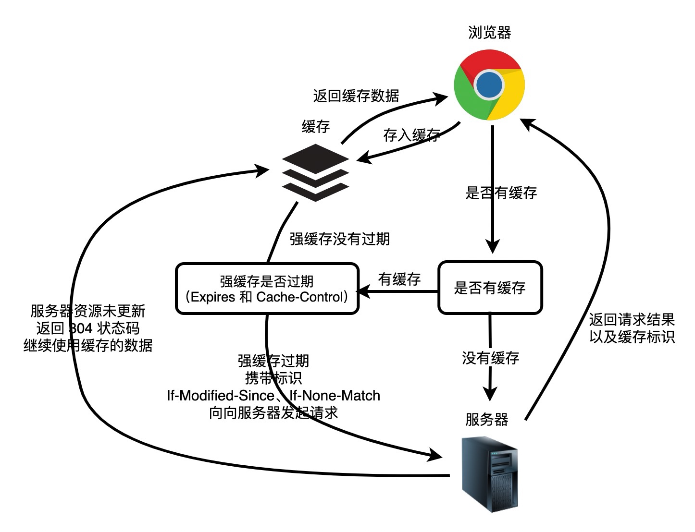
浏览器行为
在了解了整个缓存策略或者说缓存读取流程后，我们还需要了解一个东西，那就是用户对浏览器的不同操作，会触发不同的缓存读取策略。
对应主要有 3 种不同的浏览器行为：
- 打开网页，地址栏输入地址：查找 Disk Cache 中是否有匹配。如有则使用；如没有则发送网络请求。
- 普通刷新 (F5)：因为 TAB 并没有关闭，因此 Memory Cache 是可用的，会被优先使用(如果匹配的话)。其次才是 Disk Cache。
- 强制刷新 ( Ctrl + F5 )：浏览器不使用缓存，因此发送的请求头部均带有 Cache-control: no-cache（为了兼容，还带了 Pragma: no-cache ）。服务器直接返回 200 和最新内容。
实操案例
实践才是检验真理的唯一标准。上面已经将理论部分讲解完毕了，接下来我们就来用实际代码验证一下上面所讲的验证规则。
下面是使用 Node.js 搭建的服务器：
const http = require("http");
const path = require("path");
const fs = require("fs");
var hashStr = "A hash string.";
var hash = require("crypto")
.createHash("sha1")
.update(hashStr)
.digest("base64");
http
.createServer(function (req, res) {
const url = req.url; // 获取到请求的路径
let fullPath; // 用于拼接完整的路径
if (req.headers["if-none-match"] == hash) {
res.writeHead(304);
res.end();
return;
}
if (url === "/") {
// 代表请求的是主页
fullPath = path.join(__dirname, "static/html") + "/index.html";
} else {
fullPath = path.join(__dirname, "static", url);
res.writeHead(200, {
"Cache-Control": "max-age=5",
Etag: hash,
});
}
// 根据完整的路径 使用fs模块来进行文件内容的读取 读取内容后将内容返回
fs.readFile(fullPath, function (err, data) {
if (err) {
res.end(err.message);
} else {
// 读取文件成功，返回读取的内容，让浏览器进行解析
res.end(data);
}
});
})
.listen(3000, function () {
console.log("服务器已启动，监听 3000 端口...");
});
在上面的代码中，我们使用 Node.js 创建了一个服务器，根据请求头的 if-none-match 字段接收从客户端传递过来的 Etag 值，如果和当前的 Hash 值相同，则返回 304 的状态码。
在资源方面，我们除了主页没有设置缓存，其他静态资源我们设置了 5 秒的缓存，并且设置了 Etag 值。
注：上面的代码只是服务器部分代码，完整代码请参阅本章节所对应的代码。
效果如下：
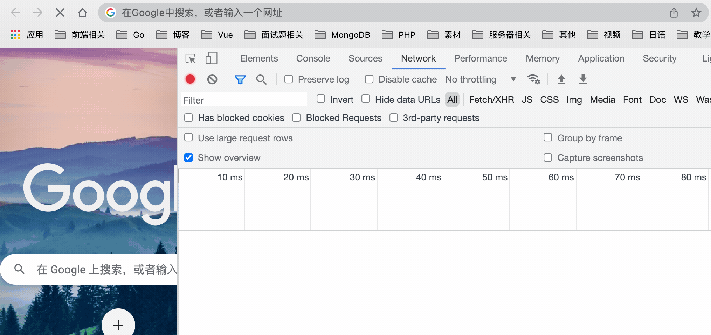
可以看到，第一次请求时因为没有缓存，所以全部都是从服务器上面获取资源，之后我们刷新页面，是从 memory cache 中获取的资源，但是由于我们的强缓存只设置了 5 秒，所以之后再次刷新页面，走的就是协商缓存，返回 304 状态码。
但是在这个示例中，如果我们修改了服务器的静态资源，客户端是没办法实时的更新的，因为静态资源是直接返回的文件，只要静态资源的文件名没变，即使该资源的内容已经发生了变化，服务器也会认为资源没有变化。
那怎么解决呢？
解决办法也就是我们在做静态资源构建时，在打包完成的静态资源文件名上根据它内容 Hash 值添加上一串 Hash 码，这样在 CSS 或者 JS 文件内容没有变化时，生成的文件名也就没有变化，反映到页面上的话就是 url 没有变化。
如果你的文件内容有变化，那么对应生成的文件名后面的 Hash 值也会发生变化，那么嵌入到页面的文件 url 也就会发生变化，从而可以达到一个更新缓存的目的。这也是为什么在使用 webpack 等一些打包工具时，打包后的文件名后面会添加上一串 Hash 码的原因。
目前来讲，这在前端开发中比较常见的一个静态资源缓存方案。
缓存的最佳实践
频繁变动的资源
Cache-Control: no-cache
对于频繁变动的资源，首先需要使用 Cache-Control: no-cache 使浏览器每次都请求服务器，然后配合 ETag 或者 Last-Modified 来验证资源是否有效。
这样的做法虽然不能节省请求数量，但是能显著减少响应数据大小。
不常变化的资源
Cache-Control: max-age=31536000
通常在处理这类资源时，给它们的 Cache-Control 配置一个很大的 max-age=31536000 (一年)，这样浏览器之后请求相同的 URL 会命中强制缓存。
而为了解决更新的问题，就需要在文件名（或者路径）中添加 Hash， 版本号等动态字符，之后更改动态字符，从而达到更改引用 URL 的目的，让之前的强制缓存失效 (其实并未立即失效，只是不再使用了而已)。
在线提供的类库（如 jquery-3.3.1.min.js、lodash.min.js 等）均采用这个模式。